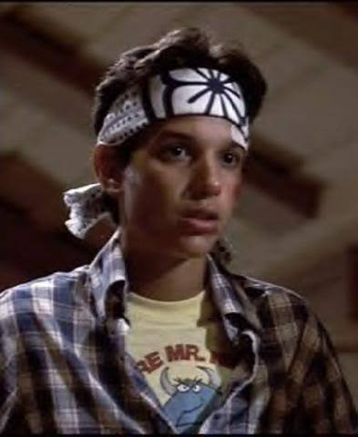
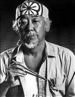

Miyagi Sensei！ じゃんけんの必勝法を教えてください！
Make a perfect picture．
If come from inside you，always right down．
完璧なイメージを描くのだ。
心から表れたものは常に正しい・・・

完璧なイメージが描けたら、
下のボタンを押して、じゃんけんを始めよう。
*遊び方
ボタンを押した後、マイクへのアクセス許可を求められる場合、「許可」を選択してください。
マイクを許可した後、「最初はグー、じゃんけん グー or チョキ or パー」の形式でマイクへ話しかけてください。
あなたの出した手は、
・・・
コンピューターの出した手は、
・・・